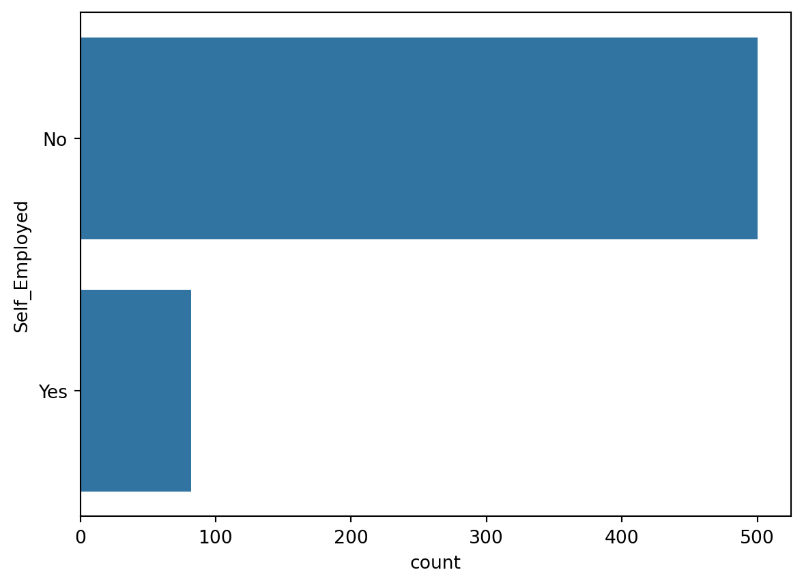
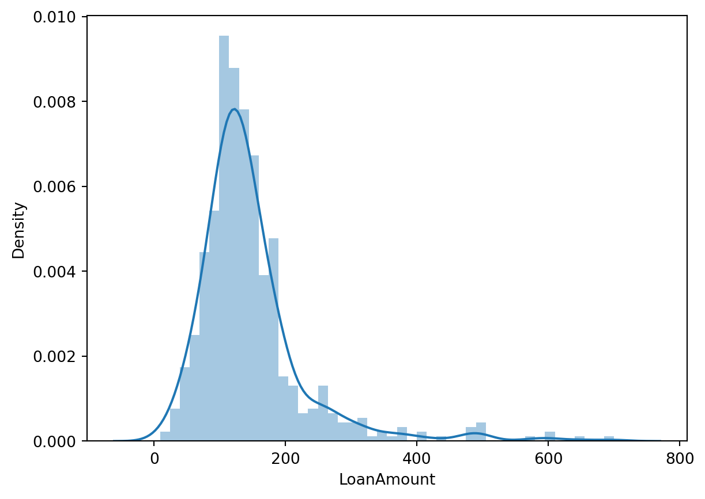
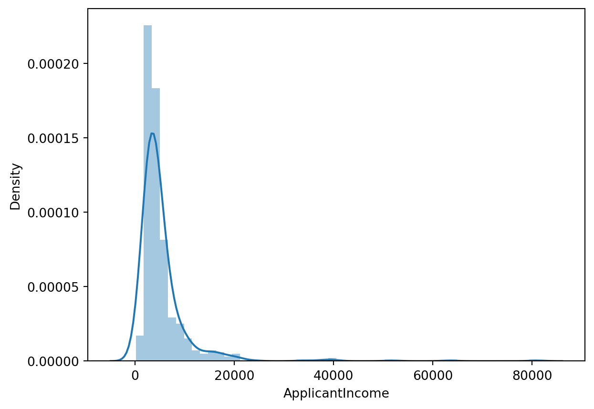
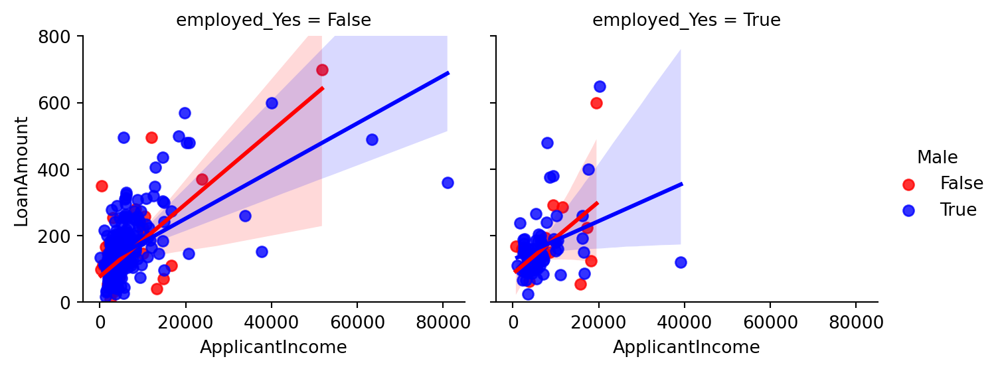
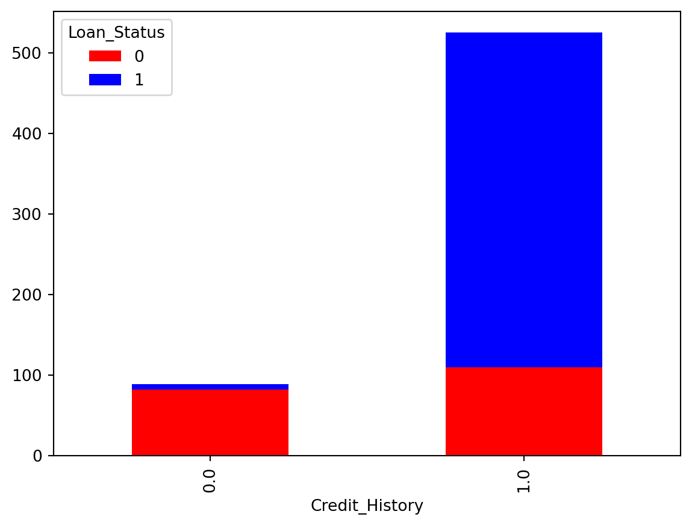
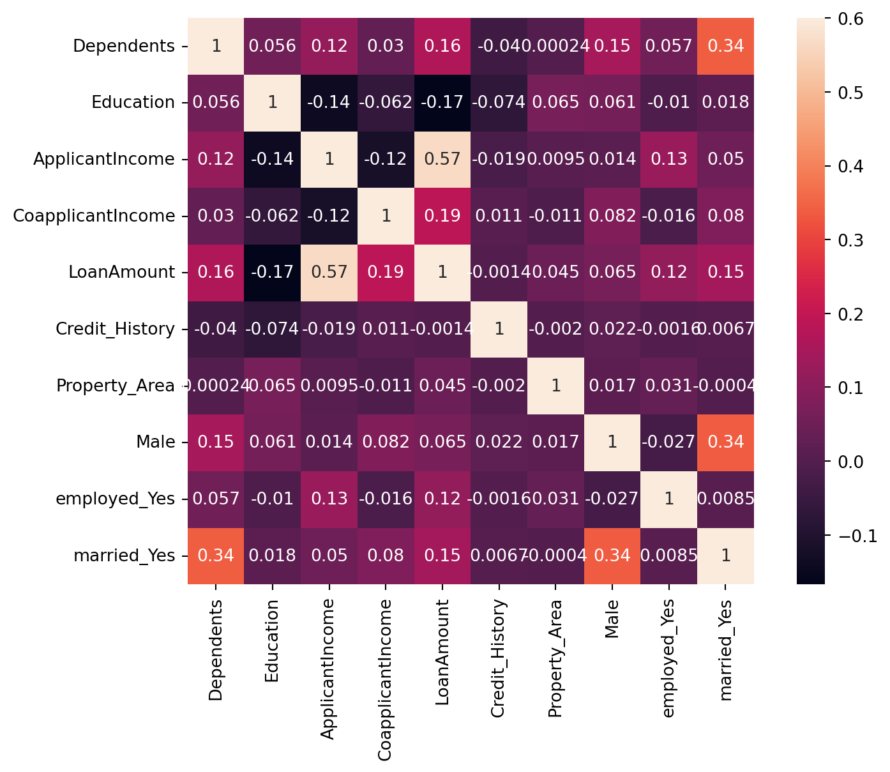
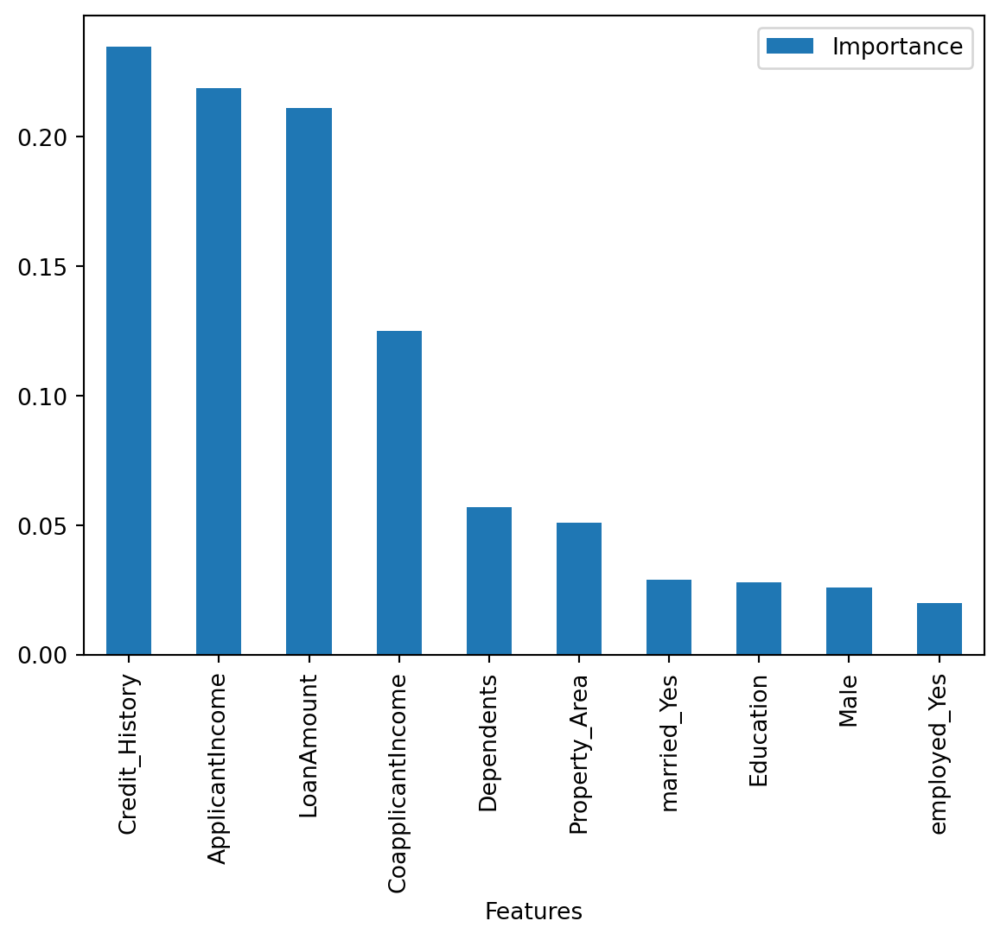

import numpy as np
import pandas as pd
import seaborn as sns
import matplotlib.pyplot as plt
%matplotlib inlineThe goal of this project is to develop an automated system for predicting loan eligibility based on customer details provided through an online application form. The company aims to streamline and optimize their loan approval process by leveraging data to identify customer segments that are most likely to be eligible for a loan. This will enable targeted marketing and more efficient processing of applications.
Problem Statement
The company has provided a dataset with customer information, including the following features: - Gender: The gender of the applicant. - Marital Status: Whether the applicant is married or not. - Education: The education level of the applicant. - Number of Dependents: The number of people financially dependent on the applicant. - Income: The applicant’s monthly income. - Loan Amount: The amount of loan applied for. - Credit History: A record of the applicant’s past credit behavior. - Others: Any additional relevant features.
The task is to use this data to identify which customers are eligible for a loan. This involves segmenting the customers into groups based on their likelihood of being approved for a loan. The dataset provided is partial, and the challenge is to work with the available data to build a predictive model.
Importing Libraries
from sklearn.model_selection import train_test_split
from sklearn import feature_selection
from sklearn import model_selection
from sklearn.metrics import accuracy_score
from sklearn.linear_model import LogisticRegression
from sklearn.svm import SVC
from sklearn.naive_bayes import GaussianNB
from sklearn.ensemble import RandomForestClassifier,GradientBoostingClassifier
from sklearn.neighbors import KNeighborsClassifier
import warnings
warnings.filterwarnings('ignore')Importing data
train = pd.read_csv('../input/loan-prediction-problem-dataset/train_u6lujuX_CVtuZ9i.csv')
test = pd.read_csv('../input/loan-prediction-problem-dataset/test_Y3wMUE5_7gLdaTN.csv')print (train.shape, test.shape)(614, 13) (367, 12)Data Exploration
train.head() | Loan_ID | Gender | Married | Dependents | Education | Self_Employed | ApplicantIncome | CoapplicantIncome | LoanAmount | Loan_Amount_Term | Credit_History | Property_Area | Loan_Status | |
|---|---|---|---|---|---|---|---|---|---|---|---|---|---|
| 0 | LP001002 | Male | No | 0 | Graduate | No | 5849 | 0.0 | NaN | 360.0 | 1.0 | Urban | Y |
| 1 | LP001003 | Male | Yes | 1 | Graduate | No | 4583 | 1508.0 | 128.0 | 360.0 | 1.0 | Rural | N |
| 2 | LP001005 | Male | Yes | 0 | Graduate | Yes | 3000 | 0.0 | 66.0 | 360.0 | 1.0 | Urban | Y |
| 3 | LP001006 | Male | Yes | 0 | Not Graduate | No | 2583 | 2358.0 | 120.0 | 360.0 | 1.0 | Urban | Y |
| 4 | LP001008 | Male | No | 0 | Graduate | No | 6000 | 0.0 | 141.0 | 360.0 | 1.0 | Urban | Y |
train.info() <class 'pandas.core.frame.DataFrame'>
RangeIndex: 614 entries, 0 to 613
Data columns (total 13 columns):
# Column Non-Null Count Dtype
--- ------ -------------- -----
0 Loan_ID 614 non-null object
1 Gender 601 non-null object
2 Married 611 non-null object
3 Dependents 599 non-null object
4 Education 614 non-null object
5 Self_Employed 582 non-null object
6 ApplicantIncome 614 non-null int64
7 CoapplicantIncome 614 non-null float64
8 LoanAmount 592 non-null float64
9 Loan_Amount_Term 600 non-null float64
10 Credit_History 564 non-null float64
11 Property_Area 614 non-null object
12 Loan_Status 614 non-null object
dtypes: float64(4), int64(1), object(8)
memory usage: 62.5+ KBtrain.isnull().sum()Loan_ID 0
Gender 13
Married 3
Dependents 15
Education 0
Self_Employed 32
ApplicantIncome 0
CoapplicantIncome 0
LoanAmount 22
Loan_Amount_Term 14
Credit_History 50
Property_Area 0
Loan_Status 0
dtype: int64test.head()| Loan_ID | Gender | Married | Dependents | Education | Self_Employed | ApplicantIncome | CoapplicantIncome | LoanAmount | Loan_Amount_Term | Credit_History | Property_Area | |
|---|---|---|---|---|---|---|---|---|---|---|---|---|
| 0 | LP001015 | Male | Yes | 0 | Graduate | No | 5720 | 0 | 110.0 | 360.0 | 1.0 | Urban |
| 1 | LP001022 | Male | Yes | 1 | Graduate | No | 3076 | 1500 | 126.0 | 360.0 | 1.0 | Urban |
| 2 | LP001031 | Male | Yes | 2 | Graduate | No | 5000 | 1800 | 208.0 | 360.0 | 1.0 | Urban |
| 3 | LP001035 | Male | Yes | 2 | Graduate | No | 2340 | 2546 | 100.0 | 360.0 | NaN | Urban |
| 4 | LP001051 | Male | No | 0 | Not Graduate | No | 3276 | 0 | 78.0 | 360.0 | 1.0 | Urban |
test.info()<class 'pandas.core.frame.DataFrame'>
RangeIndex: 367 entries, 0 to 366
Data columns (total 12 columns):
# Column Non-Null Count Dtype
--- ------ -------------- -----
0 Loan_ID 367 non-null object
1 Gender 356 non-null object
2 Married 367 non-null object
3 Dependents 357 non-null object
4 Education 367 non-null object
5 Self_Employed 344 non-null object
6 ApplicantIncome 367 non-null int64
7 CoapplicantIncome 367 non-null int64
8 LoanAmount 362 non-null float64
9 Loan_Amount_Term 361 non-null float64
10 Credit_History 338 non-null float64
11 Property_Area 367 non-null object
dtypes: float64(3), int64(2), object(7)
memory usage: 34.5+ KBtest.isnull().sum()Loan_ID 0
Gender 11
Married 0
Dependents 10
Education 0
Self_Employed 23
ApplicantIncome 0
CoapplicantIncome 0
LoanAmount 5
Loan_Amount_Term 6
Credit_History 29
Property_Area 0
dtype: int64Data Preparation / Processing
data = [train,test]
for dataset in data:
#Filter categorical variables
categorical_columns = [x for x in dataset.dtypes.index if dataset.dtypes[x]=='object']
# Exclude ID cols and source:
categorical_columns = [x for x in categorical_columns if x not in ['Loan_ID' ]]
#Print frequency of categories
for col in categorical_columns:
print ('\nFrequency of Categories for variable %s'%col)
print (train[col].value_counts())
Frequency of Categories for variable Gender
Gender
Male 489
Female 112
Name: count, dtype: int64
Frequency of Categories for variable Married
Married
Yes 398
No 213
Name: count, dtype: int64
Frequency of Categories for variable Dependents
Dependents
0 345
1 102
2 101
3+ 51
Name: count, dtype: int64
Frequency of Categories for variable Education
Education
Graduate 480
Not Graduate 134
Name: count, dtype: int64
Frequency of Categories for variable Self_Employed
Self_Employed
No 500
Yes 82
Name: count, dtype: int64
Frequency of Categories for variable Property_Area
Property_Area
Semiurban 233
Urban 202
Rural 179
Name: count, dtype: int64Gender
sns.countplot(train['Gender'])
pd.crosstab(train.Gender, train.Loan_Status, margins = True)| Loan_Status | N | Y | All |
|---|---|---|---|
| Gender | |||
| Female | 37 | 75 | 112 |
| Male | 150 | 339 | 489 |
| All | 187 | 414 | 601 |
The male are in large number as compared to female applicants.Also many of them have positive Loan Status. Further Binarization of this feature should be done,
train.Gender = train.Gender.fillna(train.Gender.mode())
test.Gender = test.Gender.fillna(test.Gender.mode())
sex = pd.get_dummies(train['Gender'] , drop_first = True )
train.drop(['Gender'], axis = 1 , inplace =True)
train = pd.concat([train , sex ] , axis = 1)
sex = pd.get_dummies(test['Gender'] , drop_first = True )
test.drop(['Gender'], axis = 1 , inplace =True)
test = pd.concat([test , sex ] , axis = 1)Dependants
plt.figure(figsize=(6,6))
labels = ['0' , '1', '2' , '3+']
explode = (0.05, 0, 0, 0)
size = [345 , 102 , 101 , 51]
plt.pie(size, explode=explode, labels=labels,
autopct='%1.1f%%', shadow = True, startangle = 90)
plt.axis('equal')
plt.show()
train.Dependents.value_counts()Dependents
0 345
1 102
2 101
3+ 51
Name: count, dtype: int64pd.crosstab(train.Dependents , train.Loan_Status, margins = True)| Loan_Status | N | Y | All |
|---|---|---|---|
| Dependents | |||
| 0 | 107 | 238 | 345 |
| 1 | 36 | 66 | 102 |
| 2 | 25 | 76 | 101 |
| 3+ | 18 | 33 | 51 |
| All | 186 | 413 | 599 |
The applicants with highest number of dependants are least in number whereas applicants with no dependance are greatest among these.
train.Dependents = train.Dependents.fillna("0")
test.Dependents = test.Dependents.fillna("0")
rpl = {'0':'0', '1':'1', '2':'2', '3+':'3'}
train.Dependents = train.Dependents.replace(rpl).astype(int)
test.Dependents = test.Dependents.replace(rpl).astype(int)Credit History
pd.crosstab(train.Credit_History , train.Loan_Status, margins = True)| Loan_Status | N | Y | All |
|---|---|---|---|
| Credit_History | |||
| 0.0 | 82 | 7 | 89 |
| 1.0 | 97 | 378 | 475 |
| All | 179 | 385 | 564 |
train.Credit_History = train.Credit_History.fillna(train.Credit_History.mode()[0])
test.Credit_History = test.Credit_History.fillna(test.Credit_History.mode()[0])Self Employed
sns.countplot(train['Self_Employed'])
pd.crosstab(train.Self_Employed , train.Loan_Status,margins = True)| Loan_Status | N | Y | All |
|---|---|---|---|
| Self_Employed | |||
| No | 157 | 343 | 500 |
| Yes | 26 | 56 | 82 |
| All | 183 | 399 | 582 |
train.Self_Employed = train.Self_Employed.fillna(train.Self_Employed.mode())
test.Self_Employed = test.Self_Employed.fillna(test.Self_Employed.mode())
self_Employed = pd.get_dummies(train['Self_Employed'] ,prefix = 'employed' ,drop_first = True )
train.drop(['Self_Employed'], axis = 1 , inplace =True)
train = pd.concat([train , self_Employed ] , axis = 1)
self_Employed = pd.get_dummies(test['Self_Employed'] , prefix = 'employed' ,drop_first = True )
test.drop(['Self_Employed'], axis = 1 , inplace =True)
test = pd.concat([test , self_Employed ] , axis = 1)Married
sns.countplot(train.Married)
pd.crosstab(train.Married , train.Loan_Status,margins = True)| Loan_Status | N | Y | All |
|---|---|---|---|
| Married | |||
| No | 79 | 134 | 213 |
| Yes | 113 | 285 | 398 |
| All | 192 | 419 | 611 |
train.Married = train.Married.fillna(train.Married.mode())
test.Married = test.Married.fillna(test.Married.mode())
married = pd.get_dummies(train['Married'] , prefix = 'married',drop_first = True )
train.drop(['Married'], axis = 1 , inplace =True)
train = pd.concat([train , married ] , axis = 1)
married = pd.get_dummies(test['Married'] , prefix = 'married', drop_first = True )
test.drop(['Married'], axis = 1 , inplace =True)
test = pd.concat([test , married ] , axis = 1)Loan Amount Term and Loan Amount
train.drop(['Loan_Amount_Term'], axis = 1 , inplace =True)
test.drop(['Loan_Amount_Term'], axis = 1 , inplace =True)
train.LoanAmount = train.LoanAmount.fillna(train.LoanAmount.mean()).astype(int)
test.LoanAmount = test.LoanAmount.fillna(test.LoanAmount.mean()).astype(int)sns.distplot(train['LoanAmount'])
We observe no outliers in the continuous variable Loan Amount
Education
sns.countplot(train.Education)
train['Education'] = train['Education'].map( {'Graduate': 0, 'Not Graduate': 1} ).astype(int)
test['Education'] = test['Education'].map( {'Graduate': 0, 'Not Graduate': 1} ).astype(int)Property Area
sns.countplot(train.Property_Area)
train['Property_Area'] = train['Property_Area'].map( {'Urban': 0, 'Semiurban': 1 ,'Rural': 2 } ).astype(int)
test.Property_Area = test.Property_Area.fillna(test.Property_Area.mode())
test['Property_Area'] = test['Property_Area'].map( {'Urban': 0, 'Semiurban': 1 ,'Rural': 2 } ).astype(int)Co-Applicant income and Applicant income
sns.distplot(train['ApplicantIncome'])
sns.distplot(train['CoapplicantIncome'])
Target Variable : Loan Status
train['Loan_Status'] = train['Loan_Status'].map( {'N': 0, 'Y': 1 } ).astype(int)Dropping the ID column
train.drop(['Loan_ID'], axis = 1 , inplace =True)View the datasets
train.head()| Dependents | Education | ApplicantIncome | CoapplicantIncome | LoanAmount | Credit_History | Property_Area | Loan_Status | Male | employed_Yes | married_Yes | |
|---|---|---|---|---|---|---|---|---|---|---|---|
| 0 | 0 | 0 | 5849 | 0.0 | 146 | 1.0 | 0 | 1 | True | False | False |
| 1 | 1 | 0 | 4583 | 1508.0 | 128 | 1.0 | 2 | 0 | True | False | True |
| 2 | 0 | 0 | 3000 | 0.0 | 66 | 1.0 | 0 | 1 | True | True | True |
| 3 | 0 | 1 | 2583 | 2358.0 | 120 | 1.0 | 0 | 1 | True | False | True |
| 4 | 0 | 0 | 6000 | 0.0 | 141 | 1.0 | 0 | 1 | True | False | False |
test.head()| Loan_ID | Dependents | Education | ApplicantIncome | CoapplicantIncome | LoanAmount | Credit_History | Property_Area | Male | employed_Yes | married_Yes | |
|---|---|---|---|---|---|---|---|---|---|---|---|
| 0 | LP001015 | 0 | 0 | 5720 | 0 | 110 | 1.0 | 0 | True | False | True |
| 1 | LP001022 | 1 | 0 | 3076 | 1500 | 126 | 1.0 | 0 | True | False | True |
| 2 | LP001031 | 2 | 0 | 5000 | 1800 | 208 | 1.0 | 0 | True | False | True |
| 3 | LP001035 | 2 | 0 | 2340 | 2546 | 100 | 1.0 | 0 | True | False | True |
| 4 | LP001051 | 0 | 1 | 3276 | 0 | 78 | 1.0 | 0 | True | False | False |
Visualizing the correlations and relation
Plot between LoanAmount, Applicant Income, Employement and Gender
What is the relation of Loan taken between men and women?
Did the employed ones were greater in number to take Loan ?
What is distribution of Loan Amount and Income?
# Corrected code using height instead of size
g = sns.lmplot(x='ApplicantIncome', y='LoanAmount', data=train, col='employed_Yes', hue='Male',
palette=["Red", "Blue", "Yellow"], aspect=1.2, height=3)
g.set(ylim=(0, 800))
# Relation between the male or female applicant's income, loan taken, and self-employment status.
- Above graph tells:
- The male applicants take more amount of loan than female.
- The males are higher in number of “NOT self employed” category.
- The amount is still larger in the income range in (0 to 20000).
- Also we observe that majority of applicants are NOT self employed.
- Highest Loan amount taken is by the female applicant of about 700 which is NOT self employed.
- The majority of income taken is about 0-200 with income in the range 0-20000.
- The line plotted shows that with increase in income the amount of loan increases with almost same slope for the case of women in both the cases but a slightely lesser slope in the case of men in Self- Employed category as compared to non-self employed.
Boxplots for relation between Property area, amount of Loan and Education qualification
Further we analyse the relation between education status,loan taken and property area
- Property_Area:
Urban :0Semiurban :1Rural :2
plt.figure(figsize=(5,2))
sns.boxplot(x="Property_Area", y="LoanAmount", hue="Education",data=train, palette="coolwarm")
- The above boxplot signifies that,
- In the Urban area the non graduates take slightly more loan than graduates.
- In the Rural and semiurban area the graduates take more amount of Loan than non graduates
- The higher values of Loan are mostly from Urban area
- The semiurban area and rural area both have one unusual Loan amount close to zero.
Crosstab for relation between Credit History and Loan status.
train.Credit_History.value_counts()Credit_History
1.0 525
0.0 89
Name: count, dtype: int64lc = pd.crosstab(train['Credit_History'], train['Loan_Status'])
lc.plot(kind='bar', stacked=True, color=['red','blue'], grid=False)
- The credit history vs Loan Status indicates:
- The good credit history applicants have more chances of getting Loan.
- With better credit History the Loan amount given was greater too.
- But many were not given loan in the range 0-100
- The applicant with poor credit history were handled in the range 0-100 only.
plt.figure(figsize=(9,6))
sns.heatmap(train.drop('Loan_Status',axis=1).corr(), vmax=0.6, square=True, annot=True)
Prediction
The problem is of Classification as observed and concluded from the data and visualisations.
X = train.drop('Loan_Status' , axis = 1 )
y = train['Loan_Status']
X_train ,X_test , y_train , y_test = train_test_split(X , y , test_size = 0.3 , random_state =102)from sklearn.linear_model import LogisticRegression
logmodel = LogisticRegression()
logmodel.fit(X_train , y_train)
pred_l = logmodel.predict(X_test)
acc_l = accuracy_score(y_test , pred_l)*100
acc_l83.78378378378379random_forest = RandomForestClassifier(n_estimators= 100)
random_forest.fit(X_train, y_train)
pred_rf = random_forest.predict(X_test)
acc_rf = accuracy_score(y_test , pred_rf)*100
acc_rf78.91891891891892knn = KNeighborsClassifier(n_neighbors = 3)
knn.fit(X_train, y_train)
pred_knn = knn.predict(X_test)
acc_knn = accuracy_score(y_test , pred_knn)*100
acc_knn61.08108108108108gaussian = GaussianNB()
gaussian.fit(X_train, y_train)
pred_gb = gaussian.predict(X_test)
acc_gb = accuracy_score(y_test , pred_gb)*100
acc_gb82.16216216216216svc = SVC()
svc.fit(X_train, y_train)
pred_svm = svc.predict(X_test)
acc_svm = accuracy_score(y_test , pred_svm)*100
acc_svm70.27027027027027gbk = GradientBoostingClassifier()
gbk.fit(X_train, y_train)
pred_gbc = gbk.predict(X_test)
acc_gbc = accuracy_score(y_test , pred_gbc)*100
acc_gbc82.16216216216216## Arranging the Accuracy results
models = pd.DataFrame({
'Model': ['Logistic Regression', 'Random Forrest','K- Nearest Neighbour' ,
'Naive Bayes' , 'SVM','Gradient Boosting Classifier'],
'Score': [acc_l , acc_rf , acc_knn , acc_gb ,acc_svm ,acc_gbc ]})
models.sort_values(by='Score', ascending=False)| Model | Score | |
|---|---|---|
| 0 | Logistic Regression | 83.783784 |
| 3 | Naive Bayes | 82.162162 |
| 5 | Gradient Boosting Classifier | 82.162162 |
| 1 | Random Forrest | 78.918919 |
| 4 | SVM | 70.270270 |
| 2 | K- Nearest Neighbour | 61.081081 |
The highest classification accuracy is shown by Logistic Regression of about 83.24 %
Let us Check th feature importance,
importances = pd.DataFrame({'Features':X_train.columns,'Importance':np.round(random_forest.feature_importances_,3)})
importances = importances.sort_values('Importance',ascending=False).set_index('Features')
importances.head(11) | Importance | |
|---|---|
| Features | |
| Credit_History | 0.238 |
| ApplicantIncome | 0.231 |
| LoanAmount | 0.211 |
| CoapplicantIncome | 0.119 |
| Dependents | 0.057 |
| Property_Area | 0.048 |
| married_Yes | 0.029 |
| Male | 0.026 |
| Education | 0.022 |
| employed_Yes | 0.019 |
importances.plot.bar()
Credit History has the maximum importance and empoloyment has the least!
Summarizing
The Loan status has better relation with features such as Credit History, Applicant’s Income, Loan Amount needed by them, Family status(Depenedents) and Property Area which are generally considered by the loan providing organisations. These factors are hence used to take correct decisions to provide loan status or not. This data analysis hence gives a realisation of features and the relation between them from the older decision examples hence giving a learning to predict the class of the unseen data.
Finally the we predict over unseen dataset using the Logistic Regression and Random Forest model(Ensemble Learning):
df_test = test.drop(['Loan_ID'], axis = 1)df_test.head()| Dependents | Education | ApplicantIncome | CoapplicantIncome | LoanAmount | Credit_History | Property_Area | Male | employed_Yes | married_Yes | |
|---|---|---|---|---|---|---|---|---|---|---|
| 0 | 0 | 0 | 5720 | 0 | 110 | 1.0 | 0 | True | False | True |
| 1 | 1 | 0 | 3076 | 1500 | 126 | 1.0 | 0 | True | False | True |
| 2 | 2 | 0 | 5000 | 1800 | 208 | 1.0 | 0 | True | False | True |
| 3 | 2 | 0 | 2340 | 2546 | 100 | 1.0 | 0 | True | False | True |
| 4 | 0 | 1 | 3276 | 0 | 78 | 1.0 | 0 | True | False | False |
p_log = logmodel.predict(df_test)p_rf = random_forest.predict(df_test)predict_combine = np.zeros((df_test.shape[0]))
for i in range(0, test.shape[0]):
temp = p_log[i] + p_rf[i]
if temp>=2:
predict_combine[i] = 1
predict_combine = predict_combine.astype('int')submission = pd.DataFrame({
"Loan_ID": test["Loan_ID"],
"Loan_Status": predict_combine
})
submission.to_csv("results.csv", encoding='utf-8', index=False)Thank you
Author: Pratik Kumar